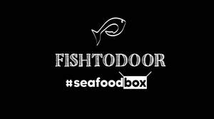

Trade Mark Journal No.2025/021 23 May 2025
UK00004200514 8 May 2025 (9,29,31,35,39,42,43)

- Class 9
- Recorded and downloadable media; software; downloadable computer software in the form of applications for electronic apparatus and portable telephones (apps), especially for offers for presenting goods and services in databases and immediate order placement.
- Class 29
- Fish [not live], Seafood [not being live], Shellfish (not live), Shellfish, not live; Prepared fish, seafood, crustacean and shellfish products, for human consumption; prepared dishes consisting principally of fish, seafood, molluscs or crustaceans; Chilled meals made from fish, Chilled meals made from seafood, crustaceans and shellfish.
- Class 31
- Fish, live, Live seafood, Shellfish, live, for human consumption.
- Class 35
- Advertising; business management, organization and administration; office functions; retail and wholesale services relating to food and drinks; retail and wholesale services in relation to: fish, seafood, crustaceans and molluscs, intended for human consumption; presentation of goods on communication media, for retail purposes; retail and wholesale services connected with the sale of subscription boxes containing food; provision of an on-line marketplace for buyers and sellers of goods and services; provision of an on-line marketplace for buyers and sellers, in relation to foodstuffs; electronic order processing; publicity and promotional services; product marketing; product merchandising; dissemination of advertising, marketing and publicity materials; production of video recordings for publicity purposes; loyalty, incentive and bonus program services; administration of loyalty programs involving discounts or incentives; commercial information and advice for consumers in the choice of products and services; arranging subscriptions to information packages.
- Class 39
- Transport; packaging and storage of goods in the field of food and drink; Delivery of goods, in relation to the following fields: Catering sector.
- Class 42
- Scientific and technological services and research and design relating thereto; industrial analysis, industrial research and industrial design services; quality control and authentication services; design and development of computer hardware and software; development and hosting of IT platforms for providing goods and services in electronically accessible, interactive databases, for the immediate placement of orders in the field of restaurants, catering, food and beverage transport; design and development of an internet platform for e-commerce with foodstuffs.
- Class 43
- Bar and restaurant services; take-away restaurant services; food and drink catering; information, advice and reservation services for the provision of food and drink; services for providing food and drink.
Paul Nicolau
Representative: Beck Greener LLP